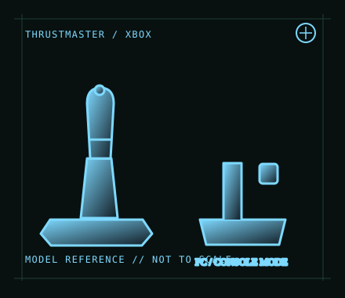

[ JOYSTICK CONTROLLERS // IDENTIFIED COMPONENT ]
Thrustmaster T.Flight HOTAS One
Xbox-licensed flight-control set with detachable throttle, PC mode and dual rudder control.

MODEL IDENTIFICATION: Thrustmaster T.Flight HOTAS One; regional SKU varies. Verify the Xbox-licensed model label and sliding mode switch. Published family specifications may not establish the revision or condition of an individual unit; compare its label and included parts with the linked documentation.
Model specifications
| Catalog subcategory | Joystick controllers |
|---|---|
| Exact model / identifier | Thrustmaster T.Flight HOTAS One; regional SKU varies. Verify the Xbox-licensed model label and sliding mode switch. |
| Design and controls | Five-axis control set with a detachable full-size throttle, adjustable stick resistance, twist-rudder function and progressive tilting lever. The throttle can attach to the stick or sit separately; compatible T.Flight rudder pedals are a separate accessory. |
| Physical interface | Wired USB connection. The physical PC/Xbox mode switch selects the target input behavior; Xbox licensing is distinct from a generic USB joystick implementation. |
| Host compatibility | Manufacturer lists Windows PC and Xbox platforms, including Xbox One and Series X|S family support as applicable. Not compatible with PlayStation consoles. PC game and console game support must be checked title by title. |
| Driver and configuration | Use the official T.Flight HOTAS One support page for its manual and software. Select PC mode for Windows; follow the current vendor setup instructions and calibrate axes in the game. Xbox use depends on the licensed mode and game support. |
Setup and control mapping
Map pitch/roll, throttle, twist rudder and progressive lever as distinct inputs. The stick rotation can be locked when using an external rudder axis. For cockpit-style play, detach and position the throttle with slack in the USB lead.
Before use, connect the device directly to the stated host, confirm it appears once in the operating system’s controller list, and test every axis and button. Keep host calibration separate from in-game dead-zone and sensitivity settings so later maintenance can reproduce the baseline.
Preservation and service notes
Inspect the mode switch, detachable joint, cable and throttle travel. Record which rudder control is enabled and whether the handle twist lock is engaged. Store the set with the throttle supported rather than hanging from its attachment.
Revision caveat: T.Flight HOTAS One is the Xbox/PC variant; its console authentication and game compatibility do not transfer to the PlayStation-oriented HOTAS 4. A PC USB connection alone does not make it an Xbox-licensed controller on other consoles.
For a physical archive entry, record the as-found label, serial/part number where present, accessories, host OS, driver or firmware version, and test method. Separate observed condition from published specifications.
References and support
- T.Flight HOTAS One — ThrustmasterManufacturer product specification, platform list and feature description.
- T.Flight HOTAS One support, drivers and manuals — ThrustmasterOfficial model-specific support page for manuals and PC setup resources.
Vendor pages and downloads can be revised or retired. Preserve the applicable manual locally and note its revision; use the exact product label when choosing firmware or drivers.